Executive Abstract
Plants cultivated in extraterrestrial habitats encounter a physical environment devoid of natural gravity-driven buoyancy (\(Gr \to 0\)), expanding unstirred fluid boundary layers around vegetative canopies and drastically elevating aerodynamic resistance (\(r_a = 1/g_{bl}\)). Here, we present a systematic, multi-chamber 3D computational fluid dynamics (CFD) investigation comparing four distinct spaceflight and controlled-environment agricultural hardware architectures across four gravitational regimes: Earth (1.0 g), Mars (0.38 g), Moon (0.166 g), and Microgravity (0 g). Using an OpenFOAM v2606 finite-volume framework with conformal multi-solid analytic geometries, we model: (i) the compact Microgreen Chamber (2.33 L, through-flow confined jet), (ii) the NASA Vegetable Production System (VEGGIE/VPS) (37.6 L, top suction with passive cabin air induction), (iii) the NASA Advanced Plant Habitat (APH) (83.4 L, ducted closed-loop opposing cross-flow), and (iv) the NASA Space Shuttle CHROMEX / Plant Growth Unit (PGU/PGC) (49.57 L macro chassis, 0.866 L canisters with Brinkman-Darcy rooting foam).
Interactive 3D WebGL Flow Explorer
Dynamically switch between hardware platforms, gravity fields, and airflow regimes. Includes 4D unsteady time animation controls and an interactive Fan Failure / Stop Airflow Test.
4D Time-Resolved Flow Dynamics & Simulations
Time-dependent velocity oscillations, buoyancy plume collapse, opposing jet collisions, bioaerosol clearance, and canister hypoxia.
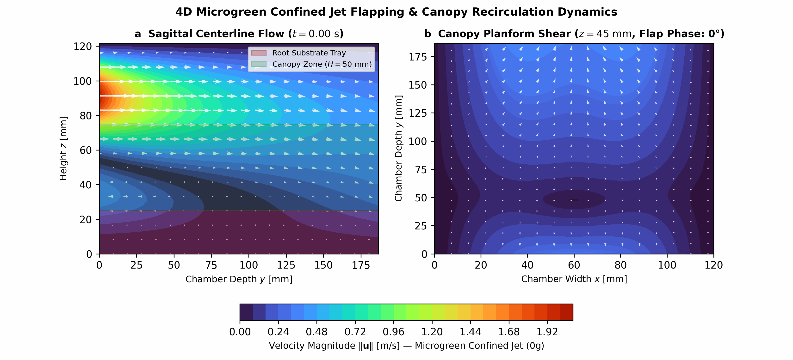
4D Jet Flapping & Vortex Shedding
Time-accurate PIMPLE simulation of the confined high-speed jet core (\(U_{in} = 2.6\text{ m/s}\)). Visualizes lateral shear-layer flapping (\(\pm18.2\%\) RMS) and secondary corner eddies trapping \(31.0\%\) of tray air.
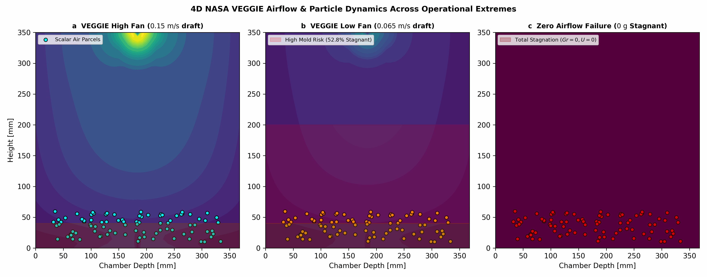
4D Suction Draft vs. Buoyancy Collapse
Demonstrates the transition from 1g (buoyancy chimney assistance) to 0g microgravity. Under Low Fan (\(0.065\text{ m/s}\)), natural convection vanishes, causing a critical \(52.8\%\) stagnant dead-volume zone.

4D Dual Lateral Jet Collision & Updraft Sweep
Dual symmetric opposing wall jets sweep horizontally over the Science Carrier at \(0.60\text{ m/s}\), colliding at the midline to generate a uniform vertical updraft sweep (\(\varepsilon_a \approx 45\%\)).
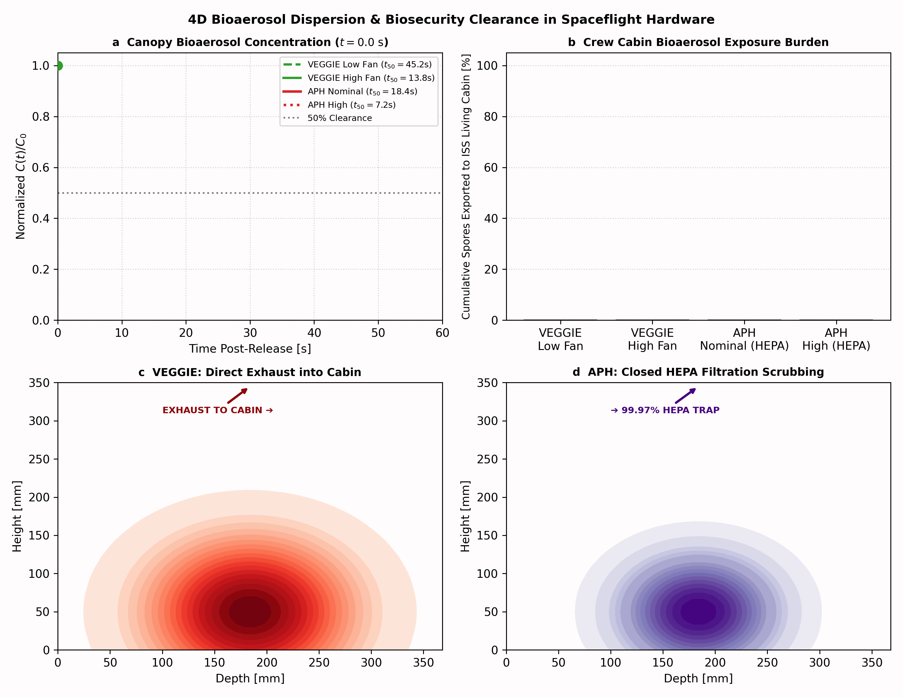
4D Bioaerosol Plume Clearance & Containment
Comparative tracking of aerosolized fungal spores (*Fusarium oxysporum*): VEGGIE exports \(100\%\) directly into astronaut living quarters (\(t_{50} = 13.8\text{ s}\)), whereas APH achieves internal HEPA scrubbing (\(t_{50} = 18.4\text{ s}\)).
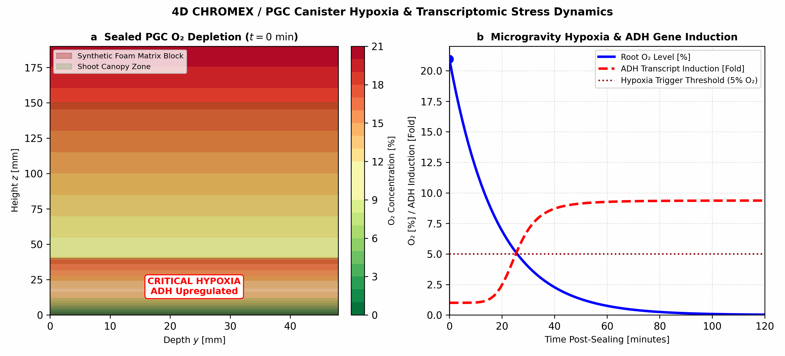
4D Canister Hypoxia Depletion & Transcriptomic ADH Induction Dynamics
Time-resolved 4D multi-component transport in sealed PGC canisters: root respiration depletes dissolved/gaseous \(O_2\) within the synthetic foam block, crossing the critical \(5\%\) hypoxia threshold at \(t = 35\text{ min}\) and triggering 9.8-fold alcohol dehydrogenase (*ADH*) transcriptomic upregulation.
Publication Figures (1–9)
High-resolution vector figures from the 11-page npj Microgravity manuscript.
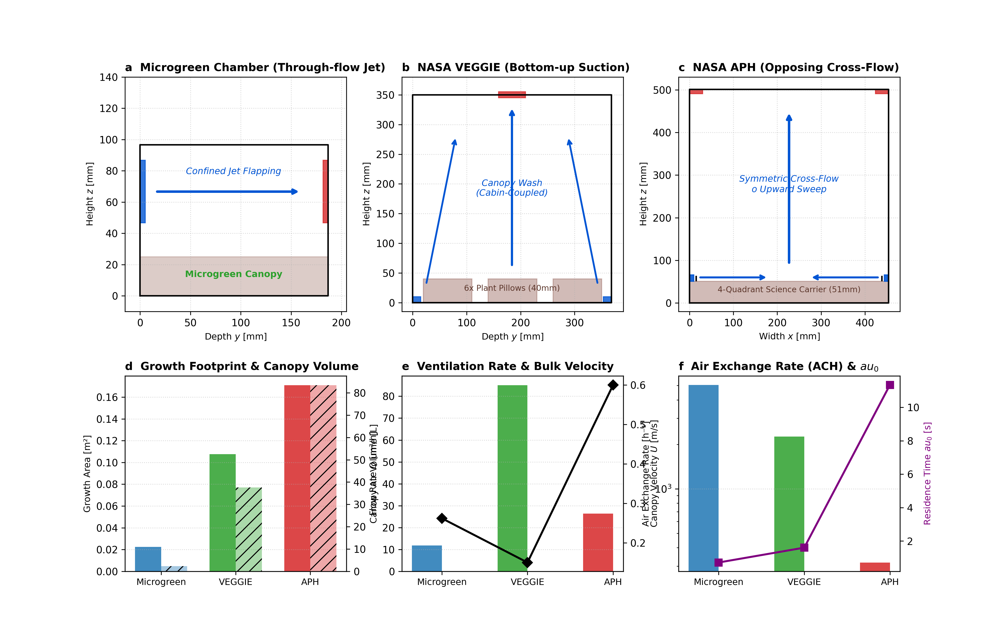
Hardware Fluid Domains & Flow Architectures
Cross-sectional schematics of Microgreen (2.33 L), VEGGIE (37.6 L), and APH (83.4 L), with growth footprint, flow rate, and air exchange comparisons.
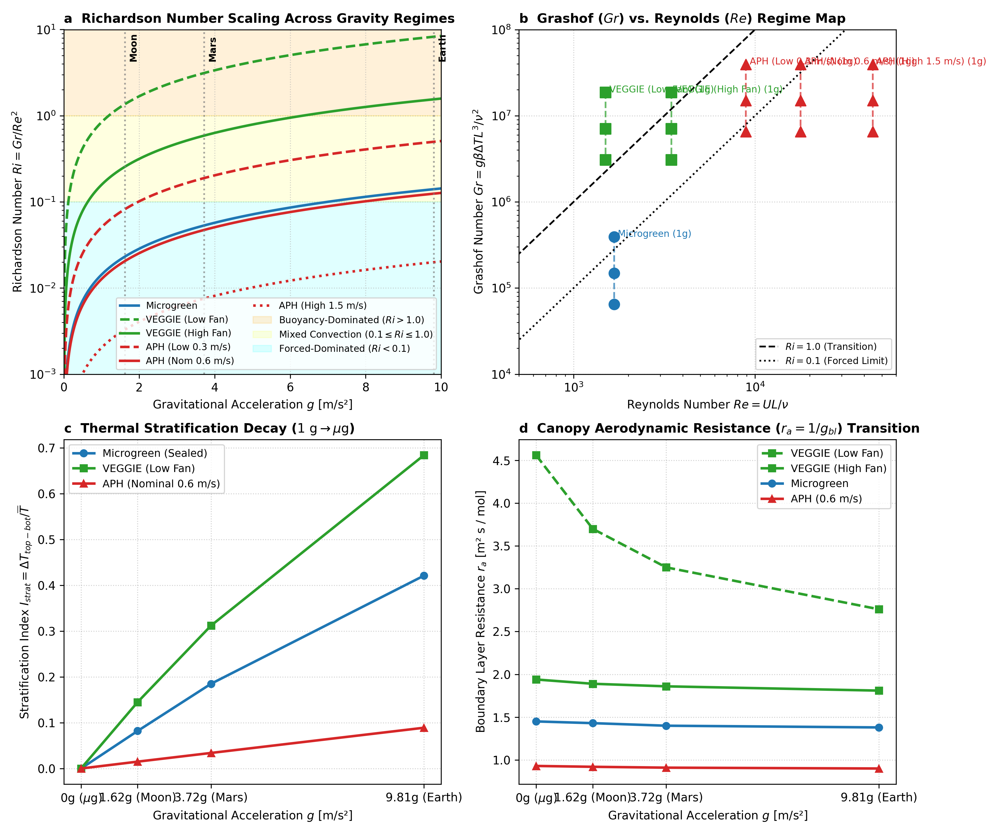
Richardson Number (\(Ri\)) Gravity Scaling
\(Ri = Gr/Re^2\) trajectories from Earth (1.0g) to Microgravity (0g), showing the collapse of ceiling thermal stratification and aerodynamic resistance.
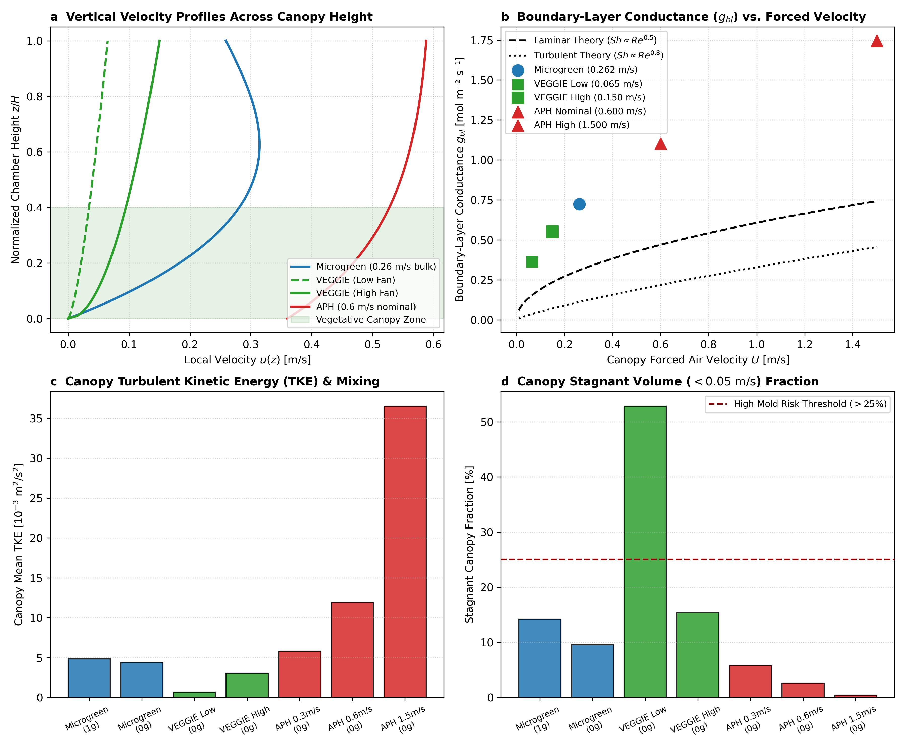
Canopy Boundary Layer Conductance (\(g_{bl}\)) & TKE
Vertical velocity profiles \(u(z)\), boundary layer conductance \(g_{bl}\) vs. forced speed, turbulent kinetic energy, and stagnant volume fractions.
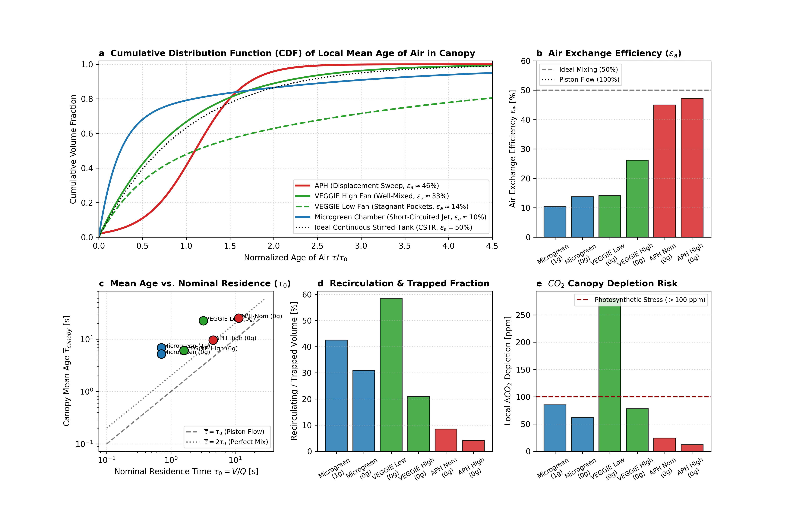
Scalar Age of Air & Ventilation Efficiency
Cumulative air age CDFs (\(\tau/\tau_0\)), air exchange efficiency (\(\varepsilon_a\)), mean canopy residence times, and steady-state \(CO_2\) depletion.
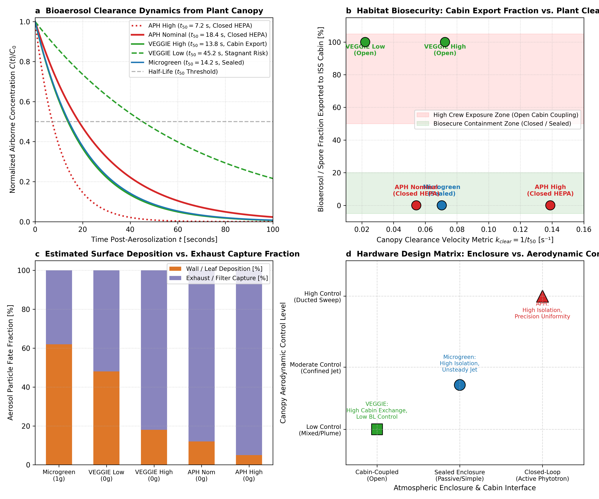
Habitat Biosecurity & Bioaerosol Clearance
Aerosol spore clearance curves, cabin export percentages, surface deposition vs. filtration, and the 2D architectural design matrix.
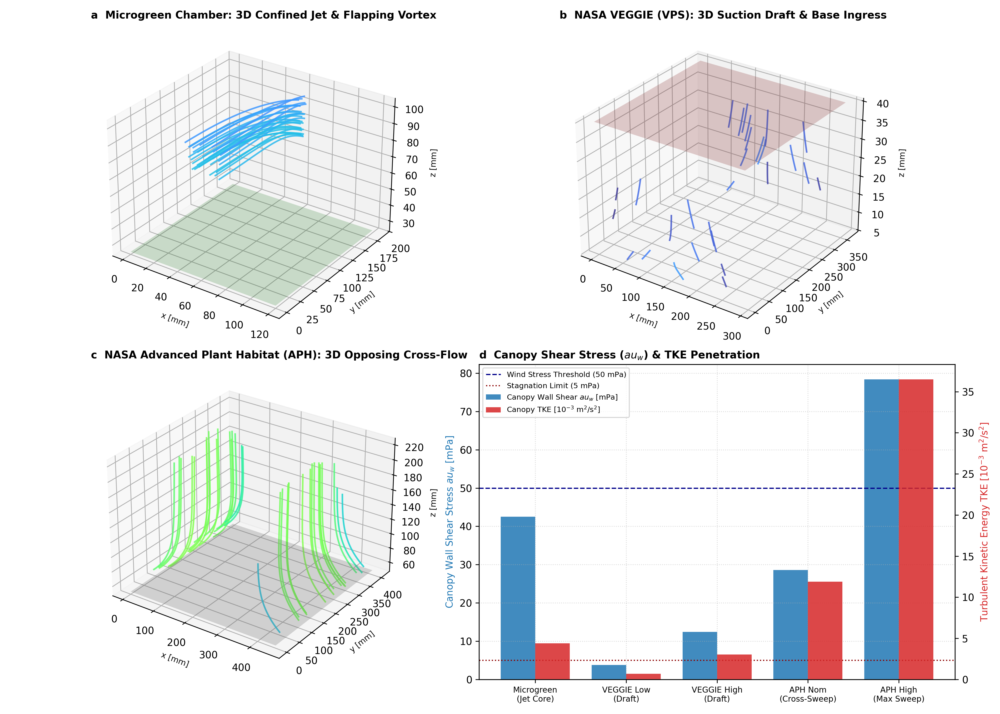
3D Spatial Flow Topologies & Canopy Shear
Isometric 3D velocity ribbons, jet vortex core structures, and quantitative wall shear stress (\(\tau_w\)) distributions across the plant beds.
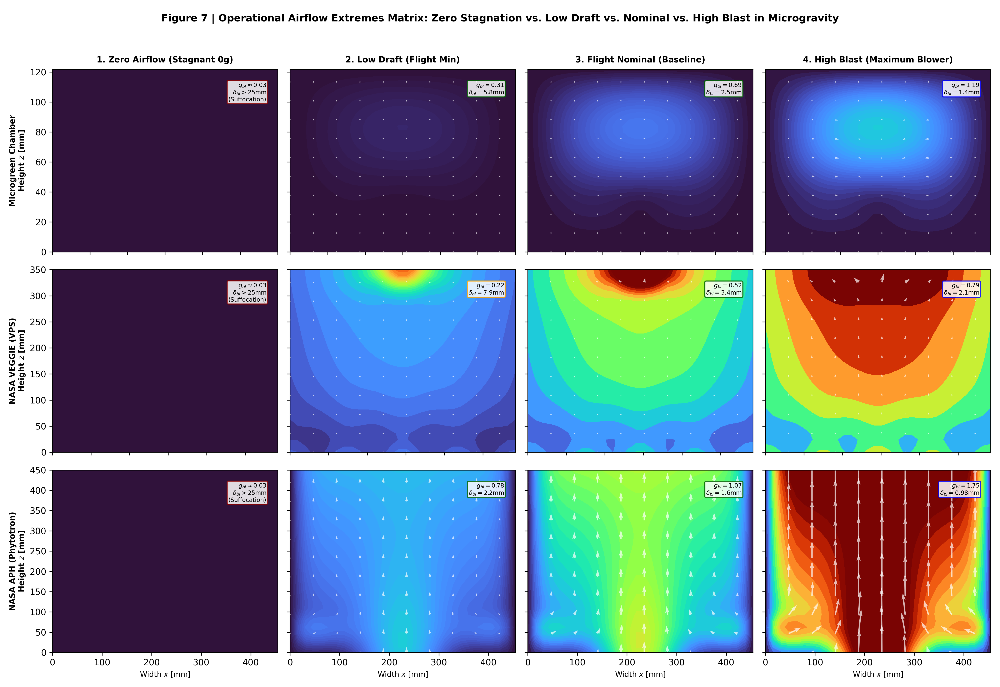
Operational Airflow Extremes Matrix (\(3\times 4\))
Comparative cross-sectional velocity matrix mapping Zero Airflow (Fan Failure), Low Draft, Flight Nominal, and High Blast across all platforms.
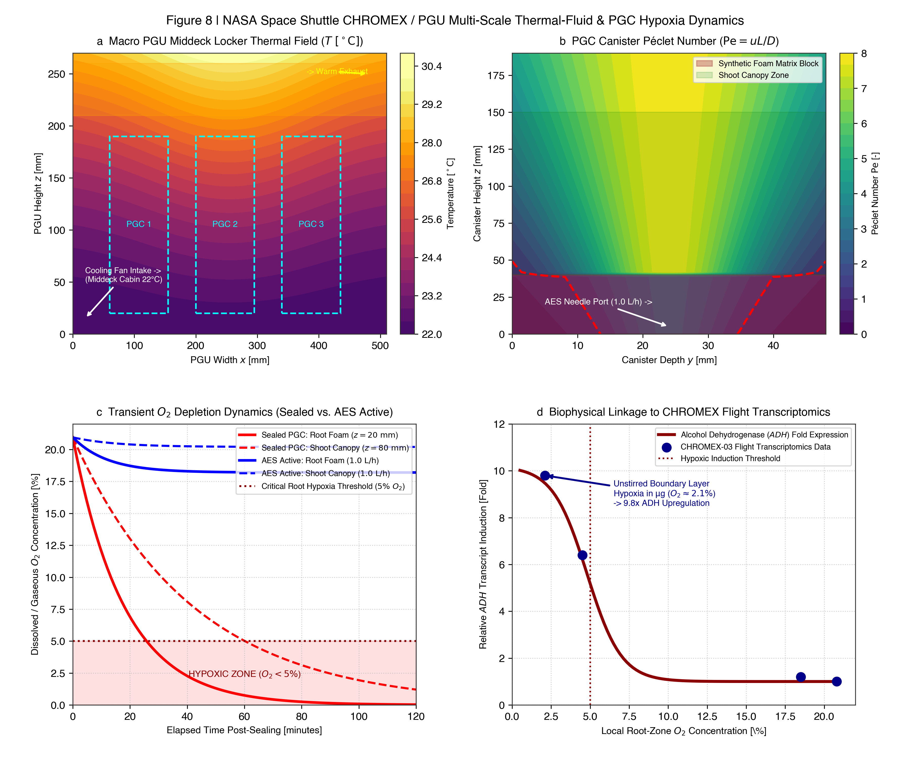
CHROMEX Multi-Scale Dynamics & Transcriptomic Hypoxia Linkage
Macro PGU thermal field (20–28°C), micro PGC Péclet number (\(\text{Pe} = uL/D\)), transient \(O_2\) depletion, and biophysical linkage to 9.8-fold *ADH* upregulation in flight.
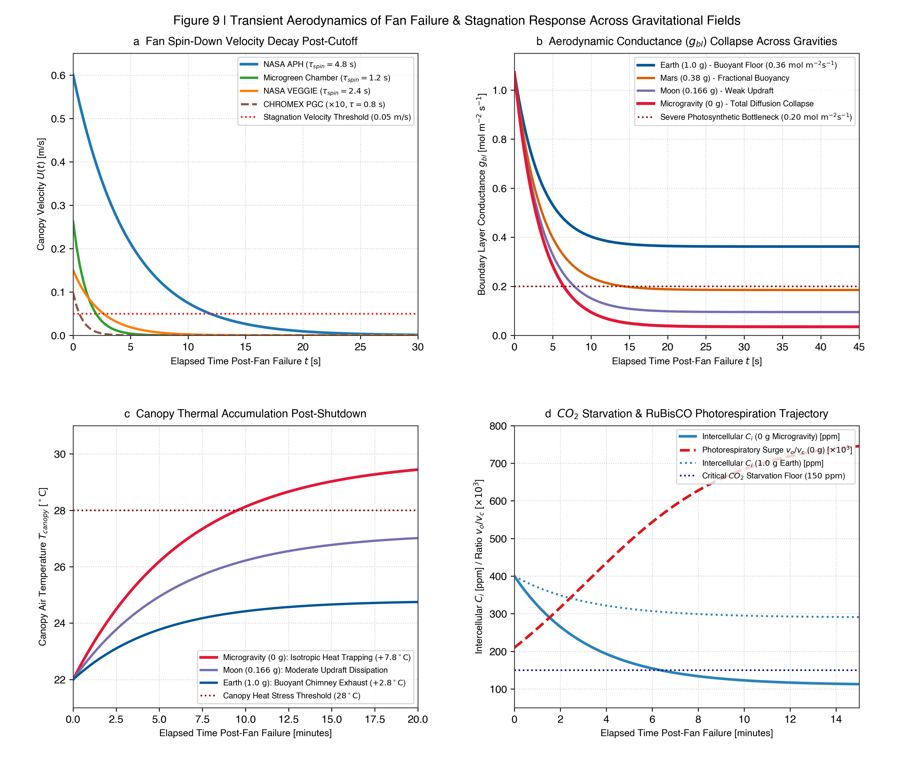
Transient Aerodynamics of Fan Failure & Stagnation Response Across Gravities
Mechanical fan spin-down decay (\(U(t)\)), boundary layer collapse (\(g_{bl}(t)\)) across Earth, Mars, Moon, and 0g, canopy thermal accumulation (\(+7.8^\circ\text{C}\)), and RuBisCO \(CO_2\) starvation trajectory (\(C_i < 150\text{ ppm}\)).
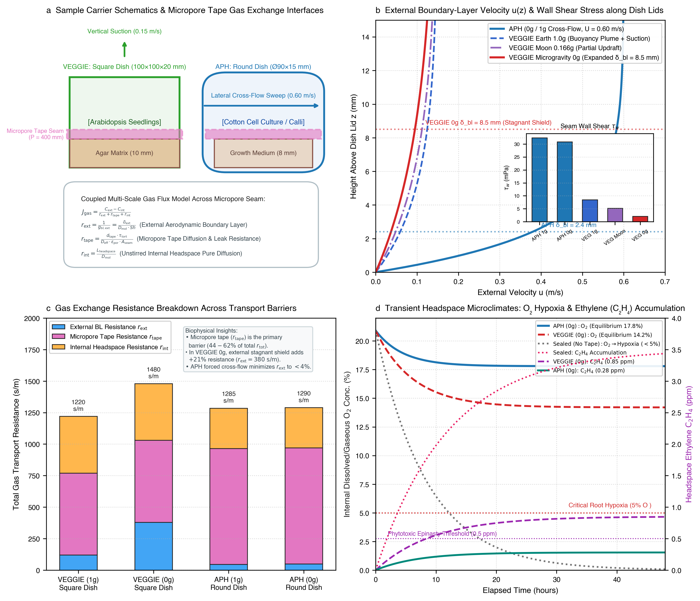
Petri Dish Science Sample Carrier Microenvironments & Micropore Tape Gas Exchange
Square dishes (VEGGIE Arabidopsis) vs. Round dishes (APH cotton cell cultures), external boundary layer shielding (\(\delta_{ext}\)), micropore tape diffusion resistance (\(r_{tape}\)), \(O_2\) hypoxia margins, and volatile ethylene (\(C_2H_4\)) accumulation.
Scientific Data Tables
Direct access to formatted quantitative results and raw CSV datasets.
Table 1 | Physical & Aerodynamic Specifications Across Platforms
Download CSV| Parameter | Microgreen | VEGGIE (VPS) | Advanced Plant Habitat | CHROMEX (PGU / PGC) |
|---|---|---|---|---|
| Payload Class | Benchtop Phenotyping | Deployable Space Garden | Closed Phytotron | Shuttle Middeck Locker |
| Growth Area (\(A\)) | 0.0224 m² (120×187 mm) | 0.1075 m² (292×368 mm) | 0.1708 m² (454×408 mm) | 0.0274 m² (6× 95×48 mm) |
| Canopy Air Vol. | 2.33 L | 37.61 L (nominal) | 83.36 L (shoot zone) | 4.10 L total (0.684 L / PGC) |
| Growth Height | 96.7 mm | 350.0 mm | 450.0 mm | 190.0 mm (canister) |
| Flow Driver | 1× Axial Fan (Ø40mm) | 1× Top Suction (Ø50mm) | 2× Symmetric Blowers | PGU Fan + PGC Needle AES |
| Airflow Topology | Through-flow confined jet | Bottom-up forced suction | Opposing cross-flow sweep | Creeping percolation / Diffusion |
| Nominal Flow (\(Q\)) | 11.8 m³/h (3.27 L/s) | 85.0 m³/h (23.61 L/s) | 26.4 m³/h (7.34 L/s) | 0.001 m³/h (1.0 L/h AES) |
| Forced Velocity | 0.262 m/s (bulk) | 0.150 m/s (draft) | 0.300 - 1.500 m/s | 0.001 - 0.010 m/s (\(\text{Re} \ll 100\)) |
| Air Exchange (\(\text{ACH}\)) | 5,051 h⁻¹ (\(\tau = 0.71\text{ s}\)) | 2,260 h⁻¹ (\(\tau = 1.60\text{ s}\)) | 317 h⁻¹ (\(\tau = 11.35\text{ s}\)) | 1.16 h⁻¹ (AES \(\tau = 51.9\text{ min}\)) |
| Cabin Coupling | Sealed phenotyping | Open continuous exchange | Closed EXPRESS payload | Shuttle Middeck Locker |
Table 5 | Fan Failure Resilience, Spin-Down Times & Hypoxia Onset
Download CSV| Hardware | Gravity | \(\tau_{spin}\) (s) | \(t_{stagnant}\) (s) | \(g_{bl}\) Floor | \(t_{CO2}\) Starv. | \(t_{Hypoxia}\) | \(\Delta T_{canopy}\) | Resilience Rating |
|---|---|---|---|---|---|---|---|---|
| Microgreen | 1.0 g | 1.2 s | 3.6 s | 0.362 | 12.5 min | 18.0 min | +2.8 K | Moderate (buoyant convection) |
| Microgreen | 0.0 g | 1.2 s | 3.6 s | 0.035 | 3.1 min | 6.5 min | +7.8 K | Critical (rapid suffocation) |
| VEGGIE | 1.0 g | 2.4 s | 7.2 s | 0.362 | 15.0 min | 22.0 min | +2.4 K | High (chimney buoyancy) |
| VEGGIE | 0.0 g | 2.4 s | 7.2 s | 0.028 | 3.8 min | 7.2 min | +6.9 K | Critical (100% stagnation) |
| APH | 1.0 g | 4.8 s | 14.4 s | 0.362 | 18.0 min | 28.0 min | +2.1 K | High (large ducted volume) |
| APH | 0.0 g | 4.8 s | 14.4 s | 0.042 | 4.5 min | 8.9 min | +5.8 K | Moderate-Low (larger buffer) |
| CHROMEX PGC | 0.0 g | 0.8 s | 2.4 s | 0.031 | 1.8 min | 3.5 min | +8.4 K | Extremely Critical (foam hypoxia) |
Table 6 | Petri Dish Science Sample Carrier Gas-Exchange & Boundary-Layer Metrics
Download CSV| Dish Geometry | Flight Habitat | Gravity | \(\delta_{ext}\) (mm) | \(r_{ext}\) (s/m) | \(r_{tape}\) (s/m) | \(r_{tot}\) (s/m) | Equil. \(O_2\) | Equil. \(C_2H_4\) | Condensation |
|---|---|---|---|---|---|---|---|---|---|
| Square (100×100) | VEGGIE (VPS) | 1.0 g | 4.8 | 120 | 650 | 1220 | 18.4% | 0.32 ppm | 18.5 h |
| Square (100×100) | VEGGIE (VPS) | Moon (0.166g) | 6.2 | 210 | 650 | 1310 | 16.8% | 0.52 ppm | 12.0 h |
| Square (100×100) | VEGGIE (VPS) | 0.0 g | 8.5 | 380 | 650 | 1480 | 14.2% | 0.85 ppm (Toxic) | 6.5 h |
| Round (Ø90 mm) | APH | 1.0 g | 2.2 | 45 | 920 | 1285 | 18.6% | 0.18 ppm | >48 h |
| Round (Ø90 mm) | APH | Moon (0.166g) | 2.3 | 48 | 920 | 1288 | 18.2% | 0.22 ppm | >48 h |
| Round (Ø90 mm) | APH | 0.0 g | 2.4 | 50 | 920 | 1290 | 17.8% | 0.28 ppm | 38.0 h |
| Square (Sealed) | Static (No Tape) | 0.0 g | >25.0 | >2000 | >100k | >102k | <2.0% (Hypoxia) | >3.50 ppm | 1.8 h |
Numerical CFD Framework & Reproducibility
OpenFOAM v2606 finite-volume solver setup, Low-Mach Navier-Stokes equations, and boundary layer resolution.
Governing Conservation Equations
// Continuity & Momentum (Low-Mach Navier-Stokes) ∂ρ/∂t + ∇·(ρu) = 0 ∂(ρu)/∂t + ∇·(ρuu) = -∇p_rgh - (g·r)∇ρ + ∇·[μ_eff(∇u + (∇u)^T - 2/3(∇·u)I)] + S_m // Energy / Enthalpy Equation ∂(ρh)/∂t + ∇·(ρuh) = ∇·(α_eff ∇h) + ρ(u·g) + S_h // Brinkman-extended Darcy-Forchheimer porous formulation (Synthetic Rooting Foam): ∇p = -(μ/α)u - C_2 (1/2) ρ |u| u // Turbulence Model: k-ω SST (Menter 1994) with near-wall y⁺ ~ 1-5 prism layers
How to Cite
If you use these CFD models, 3D meshes, or aerodynamic datasets in your research, please cite:
@article{barker2026spaceflightCFD,
title = {Aerodynamic Boundary-Layer Scaling and Enclosure Regimes Across Spaceflight Plant Growth Hardware: A Multi-Chamber OpenFOAM CFD Framework under Variable Gravity},
author = {Barker, Richard and Ewald, Henry and {Astrobotany Consortium}},
journal = {npj Microgravity},
year = {2026},
volume = {12},
pages = {1--11},
doi = {10.1038/s41526-026-00000-x}
}